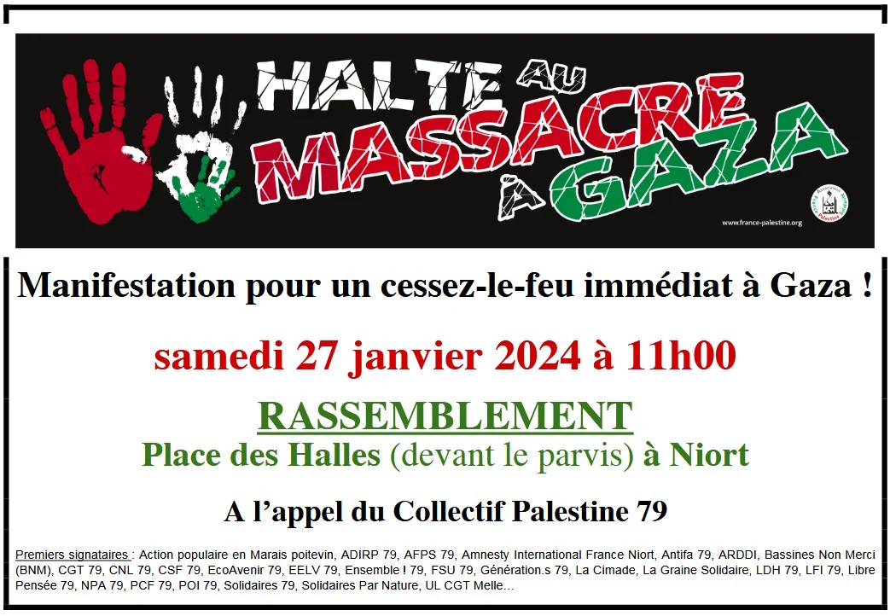

Appel relayé
À Niort, un rassemblement pour un cessez-le-feu annoncé le 27 janvier
Date indiquée par Facebook · 25 janvier 2024
Repères éditoriaux
Nous avons relayé l’appel du Collectif Palestine 79 à se retrouver samedi 27 janvier 2024 à 11 h, place des Halles à Niort.
Texte conservé avec la publication
Le Collectif Palestine 79 appelle à manifester :
SAMEDI 27 JANVIER 2024 0 11H00
Place des Halles (devant le parvis) à NIORT
Comme tous les Collectifs Palestine partout en France, le Collectif Palestine 79 exige :
- Un cessez-le feu immédiat, total et permanent !
- L’arrêt définitif des bombardements et des déplacements forcés de la population palestinienne !
- La levée immédiate, complète, durable et sans restriction du blocus !
- La protection du peuple palestinien à Gaza, en Cisjordanie, à Jérusalem-Est !
- L'Arrêt immédiat de toute coopération militaire ! Des sanctions contre Israël !

Sources
Archive rouge · export Facebook · AR-0002-FB-01489
À lire aussi · À Niort, le rassemblement du 25 octobre pour la paix en vidéo · Le lien d’origine